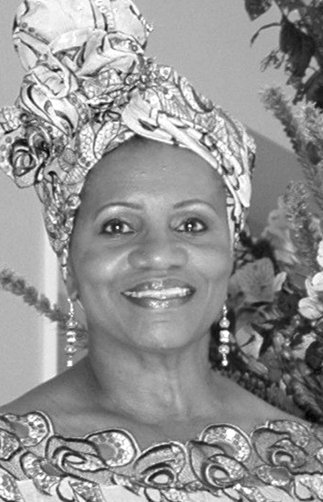

The power of three has long been revered in ancient and modern cultures as a symbol of ultimate strength, a catalyst for dynamic change, a combination that could unlock great treasures. Today, The North Carolina Black Repertory Company (NCBRC) and its international outreach program, the National Black Theatre Festival (NBTF) are embracing new challenges under the invigorating power of three vibrant African American women: Gerry Patton, Mabel Robinson and Sylvia Sprinkle-Hamlin.
"Sylvia," calls Gerry Patton. "We've sold out Saturday's matinee. What's Sunday look like?"
"How many do they want?" Sprinkle-Hamlin answers. "We've got tickets."
The phone call catches Patton and Sprinkle-Hamlin just before they lock the office to attend the opening night performance of Black Nativity. One of NCBRC's signature productions, this gospel musical was first introduced to the company by Mabel Robinson, a Broadway veteran who, with vibrant songs, dances, and a diverse cast, brings to life the nativity story as narrated by the ancient storyteller, the African griot. For the past seven years, Robinson has directed and choreographed this musical, which always runs in mid-December. Patton gets back on the phone and sells several tickets to the caller, a woman who says she's always heard wonderful things about the play and so she and several friends want to attend.
After a few minutes, everything is quiet in the office. Patton and Sprinkle-Hamlin lock up the basement office and ascend to the Arts Council Theatre on the first floor. In a gallery outside the main theatre, they join the Marvtastic Society members for a private reception before the curtain rises.
Gerry Patton, a longtime volunteer and board member now leads NCBRC as its executive director. She considers herself fortunate to have been groomed by the company's founder, the late Larry Leon Hamlin who died last June at the age of fifty-eight. "Larry's personality was flamboyant and exciting," explains Patton. "He had the knack of challenging you to rise above your level of acceptability and make excellence your benchmark. And after working with him for years...I have the same mindset--encouraging everyone around me to go 'beyond excellence' because mediocrity is not acceptable."
Patton is a skilled business professional with more than thirty years of experience in marketing, publishing, staff training and human resources. Prior to joining NCBRC, she was the Winston-Salem office manager for the Local Initiatives Support Corporation (LISC), a national, nonprofit community development organization. Before that she was Director of Client Services for Segmented Marketing Services, Inc. (SMSi), a premier multicultural marketing company based in Winston-Salem.
During her twelve-year relationship with the Festival, Patton has served as a volunteer, a volunteer co-coordinator and an office staff member, giving her broad knowledge about the internal workings of this event. In addition, she's a former member of the NCBRC Board of Directors and past president of the NCBRC Guild Board. As a result of her various roles, a very robust personal relationship blossomed between Patton and the Hamlins.
"His passion and commitment were contagious," she admits. "I'm glad I got to know Larry for the man...he really was...not someone's perception of him. I understand what he was doing, and it makes me proud to be a part of his vision and able to contribute to the success of the undertaking."
In another part of the Arts Council Theatre, Mabel Robinson spends the last few moments giving final notes to the Black Nativity cast and musicians before they take their places. "The piece is now yours. I turn it over to you. The timing of the show will be led by the music director. But you who are on stage. Do not be seduced by the audience from yesterday. Each audience is new and will respond differently," she emphasizes. "Connect and stay connected. Live each moment fully on stage honestly and therefore the audience will receive it that way. Have a good time and enjoy yourself, so the audience will be entertained."
Robinson, a retired dance faculty member of the North Carolina School of the Arts, is a multi-talented, multi-media professional internationally known for her directing, choreography, acting, and playwriting. A native of Georgia, she is a graduate of The Julliard School of Music and has danced in such companies as Alvin Ailey, Martha Graham, Talley Beatty and Louis Johnson.
She also appeared on Broadway in such renowned shows as Golden Boy, Murderous Angels, Don't Bother Me I Can't Cope, Treemonisha, Your Arms Too Short to Box with God and performed on various television shows nationally and internationally. Her movie credits include Cotton Comes to Harlem, Stand Up and Be Counted, Funny Lady, and The Wiz.
Very early in her career, Robinson balanced her role in Golden Boy, starring the legendary Sammy Davis Jr., with her role as one of the earliest African American females featured on American network television as the featured dancer on the classic television music showcase Hullabaloo. Later, she made American theatre history as the first African American woman to have two Broadway shows running concurrently. She starred as the Dancing Mary in the original production of Your Arms Too Short to Box with God, while her choreography and assistant direction was featured on Broadway in a definitive revival of Porgy and Bess.
She now shapes the look and feel of NCBRC's productions as the artistic director. For more than twenty years, she and Hamlin were a dynamic, theatrical duo; he as the producer and she as the director/choreographer. She's also contributed her talents as a playwright, performer, volunteer and often as a director for the National Black Theatre Festival.
"The first project [Larry Leon and I] did together," recalls Robinson, "was Micki Grant's Don't Bother Me I Can't Cope. It became the opening mainstage performance of the first National Black Theatre Festival in 1989." Robinson says she and Hamlin jointly developed an array of theatrical projects including Celebration: An African Odyssey, For Colored Girls Who Have Considered Suicide When The Rainbow Is Enuf, The Glory of Gospel, and Mahalia, Queen of Gospel, which was performed in both the 2005 and 2007 Festivals. Currently, NCBRC is in negotiations to tour Mahalia, Queen of Gospel in spring 2008.
In her new role as artistic director for NCBRC, Robinson is also excited about expanding the founder's vision for the company through the creation of new theatrical outlets for the community. "Our audiences must continue to be cultivated, stimulated, educated, and entertained," she explains. "One way we're doing this is by launching The NCBRC Teen Theatre. It's a strong training program giving the community's youth live performance opportunities, empowering them to become dedicated and responsible artists, individuals and leaders, while instilling in them the value of 'creating works of excellence' on and off stage."
Under Robinson's direction, sixteen youth, ages thirteen to seventeen, are learning the intricacies of being professional performing artists. In January 2008, many made their stage debut in the company's annual production, Martin Luther King, Jr. Birthday Celebration. She also says the company is preparing to review new stage scripts for future productions. Robinson also has a major hope—that the Piedmont Triad area of North Carolina (Winston-Salem, High Point, and Greensboro) create more industry jobs for local performers so they can be full-time actors, thereby creating a talent pool that NCBRC can access to build a touring company.
Sylvia Sprinkle-Hamlin rounds out the spirited trio with an insightful perspective. Currently, she is the director of the Forsyth County Public Library System. She's worked behind the scenes of the NCBRC since 1979. That year, she first met NCBRC founder Larry Leon Hamlin at a business meeting in Winston-Salem. She was nurturing potential clients for her cosmetic company and Hamlin was drumming up support for his upcoming play. "We spent most of that first encounter talking business...sales, marketing and everything that goes into making a business work," she recalls. "At the end of the evening, he gave me sixty tickets to sell for his show and to his surprise--within a week or two--I'd sold them all."
The couple dated for two years and then married in 1981. Sprinkle-Hamlin says teaming up with her late husband was a natural fit. "I love live theatre and really enjoy being a part of the creative process. In Larry, I saw his passion for Black theatre and was moved. He was good at being out front, keeping people enthused about the festival and other projects. I'm more conservative, with my feet on the ground, always working out the details to make a project a success." They spent hours hashing out business strategies to strengthen and grow the company. Eight years later, their combined talents, dedication to Black theatre and cohesive vision ultimately birthed the National Black Theatre Festival, a premier international event, which will celebrate its 20th anniversary in 2009.
Sprinkle-Hamlin says she and her husband often spoke about who would succeed him in leading the company. They both agreed loyalty, a high level of professionalism and experience were essential qualities that had to exist in the new executive(s) chosen to move the company forward. So when the NCBRC Board of Directors chose Mabel Robinson as the artistic director and Gerry Patton as the executive director, Sprinkle-Hamlin was pleased. She explains, "We need people who are trustworthy and who are committed to Larry's vision. These women will do whatever it takes to advance NCBRC, create innovative community programs, and enhance the global reach of NBTF."
Looking ahead, the trio of Sprinkle-Hamlin, Robinson and Patton is laying the ground for some long-range projects including the creation of a Black theatre arts museum and cultural center. This will preserve the rich theatrical history of African Americans while also honoring the accomplishments and talents of the late Larry Leon Hamlin. They're also fostering area collaborations to execute new projects. Currently, they're partnering with the Children's Theatre of Winston-Salem to produce, Waiting on Martin, which will open on February 12. At the invitation of Reynolds American, Inc., on February 26, 2008, NCBRC is also creating a multi-media tribute to Hamlin and his work. Sprinkle-Hamlin says she's not surprised by these new opportunities. "I think people are now realizing what a jewel Larry was and now they want to plug into the quality work we've always done for the community....Too often people don't appreciate what other people do until they're gone," she notes.
Says Patton, "The work ahead will be challenging, but the team assembled to get things done is very capable. "With Ms. Robinson as the artistic director and Mrs. Sprinkle-Hamlin providing business advice, I'm confident we'll accomplish our goals. The plan is solid, the objectives clear and the assignments properly distributed. We will continue producing quality while striving for 'beyond excellence.' "
Finally, with 2009 just around the corner, the trio is aggressively strategizing for the 20th Anniversary of the National Black Theatre Festival. Right now, they're working with the 2009 NBTF Fundraising Committee, which approaches corporations and business entities for sponsorship and develops new revenue sources. The 2009 Festival will be held in Winston-Salem, North Carolina the week of August 3–8, 2009. Learn more about it and how you can get involved at the Festival web site: www.nbtf.org.
The number three is the timeless, global symbol of interdependence as in past/present/future, spirit/mind/body, art/religion/science. Sylvia Sprinkle-Hamlin, Mabel Robinson and Gerry Patton have tapped into the power of three and have joined together to propel the North Carolina Black Repertory and the National Black Theatre Festival 'beyond excellence.' Their blended talents, vast professional experiences and dedication to preserving Larry Leon Hamlin's vision will empower them to build upon his foundation and continue his legacy of extraordinary successes.